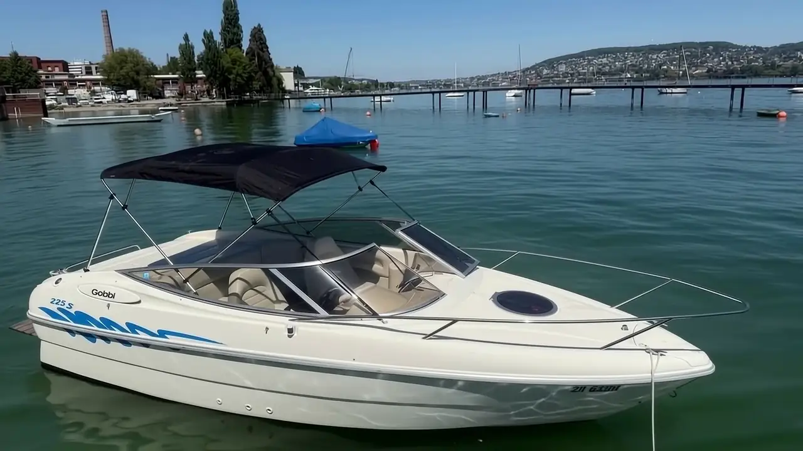

Sportboot
Gobbi 225 4.3 Sport
👥 Zugelassen bis 7 Personen
Wendiges Sportboot für den perfekten Tag auf dem Zürichsee – ideal zum Cruisen, Baden und Sonnenbaden mit bis zu 7 Personen.
Dieses Boot reservieren
Motorboot mieten auf dem Zürichsee: vom wendigen Cranchi-Sportboot bis zur MasterCraft zum Waken und Surfen hinter dem Boot. Alle Boote mit Bootsführerschein – oder entspannt mit Skipper.
Sofort reservieren Unsere Boote ansehenMotorboot mieten am Zürichsee: Wir haben nur Mietboote mit Bootsführerschein – alternativ fahren Sie mit einem unserer Skipper. An Wochenenden und Feiertagen gilt in der Regel Ganztagesmiete.
👥 Zugelassen bis 7 Personen
Wendiges Sportboot für den perfekten Tag auf dem Zürichsee – ideal zum Cruisen, Baden und Sonnenbaden mit bis zu 7 Personen.
Dieses Boot reservieren
👥 Zugelassen bis 7 Personen
Italienischer Klassiker von Cranchi: sportlich, komfortabel und zuverlässig – für entspannte Fahrten entlang der Goldküste.
Dieses Boot reservieren
👥 Zugelassen bis 7 Personen
Neu in unserer Flotte: die Cranchi Turchese 5.0 Fi mit moderner Einspritztechnik – spritzig, sparsam und top gepflegt.
Dieses Boot reservieren
👥 Zugelassen bis 7 Personen
Mehr Länge, mehr Komfort: Die Turchese 760 bietet viel Platz an Deck und ruhiges Fahrverhalten – auch bei Wellengang.
Dieses Boot reservieren
👥 Zugelassen bis 12 Personen
Unser grösstes Boot: zugelassen für bis zu 12 Personen. Perfekt für Firmenausflüge, Geburtstage und Apéro-Fahrten auf dem See.
Dieses Boot reservieren
👥 Zugelassen bis 11 Personen
Das Wakeboard- und Wakesurf-Boot schlechthin: Die NXT20 formt die perfekte Welle für Wakeboard, Wakesurf und Wasserski.
Dieses Boot reservierenSportboot, Comfort-Boot oder MasterCraft für Wakeboard & Wakesurf aussuchen.
Datum, Boot und Dauer (Halbtag/Ganztag/Abend) per SMS oder WhatsApp anfragen.
Im Hafen Wollishofen beim Restaurant Seerose das Boot vollgetankt übernehmen, kurze Einweisung erhalten – und los geht der Seetag.
MasterCraft NXT20 und NXT 22 formen die perfekte Welle – zum Waken und Surfen hinter dem Boot, für Anfänger und Profis.
Mehr erfahren →Geburtstag, Firmenausflug oder Apéro-Fahrt: bis 12 Personen auf einem Boot.
Mehr erfahren →Kein Bootsführerschein? Unser Skipper fährt, Sie geniessen den See.
Mehr erfahren →Tipps zur Bootsmiete, zu Motorbooten, zum Hafen Wollishofen und zum Waken und Surfen hinter dem Boot.